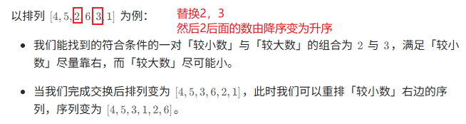

Hot 100¶
12.1 题目¶
-
对于一个长度为 N 的数组，其中没有出现的最小正整数只能在 [1,N+1] 中。这是因为如果 [1,N] 都出现了，那么答案是 N+1，否则答案是 [1,N] 中没有出现的最小正整数
- 将原数组用于标记
- 深拷贝一般和递归相关
- 采用归并排序
带时间的LRU：https://zhuanlan.zhihu.com/p/659625596
- 过期时间固定：
- get：没过期就更新时间，过期就返回-1
- put：put时更新时间，如果容量满了就删除最后一个
- 为什么可以删除最后一个？分两种情况讨论
- 在本次put之前所有元素都没被访问，那么所有元素增加的时间相同且过期时间（间隔）大家都一样，此时链表尾部的元素的时间一定不会小于其余元素，所以删除最后一个元素没有问题
- 在本次put之前有元素被更新，那么该更新元素一定会被加到表头，所以删除最后一个元素没有问题
- 为什么可以删除最后一个？分两种情况讨论
- 过期时间不固定
- get：没过期就更新时间，过期就返回-1
- put：put时更新时间，如果容量满了遍历找过期的，都没过期的再删表尾
- 递归返回的是路径数
- 只有子节点贡献值大于0，才纳入考虑
-
返回的是节点贡献值
-
用index来标识当前字母
-
每次入栈的元素：
(当前生成的字符串，下一个模式串的个数) - 用两个优先队列
- 用两个dp（最大和最小，因为可能有负数）
- 使用栈来操作，一开始可以先垫一个-1入栈
技巧
- 基于异或的交换律和结合律
-
下一个排列

41. 缺失的第一个正数¶
快速复习¶
答案一定在 [1,n+1]；原地把值 x 放到下标 x-1，最后找第一个不匹配位置。
详细题解¶
- 对于一个长度为 N 的数组，其中没有出现的最小正整数只能在 [1,N+1] 中。这是因为如果 [1,N] 都出现了，那么答案是 N+1，否则答案是 [1,N] 中没有出现的最小正整数
- 将原数组用于标记
Python 实现¶
class Solution:
def firstMissingPositive(self, nums):
n = len(nums)
for i in range(n):
while 1 <= nums[i] <= n and nums[nums[i] - 1] != nums[i]:
target = nums[i] - 1
nums[i], nums[target] = nums[target], nums[i]
for i, value in enumerate(nums):
if value != i + 1:
return i + 1
return n + 1
138. 随机链表的复制¶
快速复习¶
先建立原节点到新节点的映射，再补 next 和 random；也可把复制节点穿插进原链表做到 O(1) 额外空间。
详细题解¶
- 深拷贝一般和递归相关
补充思路： 先识别题型模型，再把状态、指针或数据结构的不变量说清楚。
Python 实现¶
class Solution:
def copyRandomList(self, head):
if not head:
return None
copies = {}
cur = head
while cur:
copies[cur] = Node(cur.val)
cur = cur.next
cur = head
while cur:
copies[cur].next = copies.get(cur.next)
copies[cur].random = copies.get(cur.random)
cur = cur.next
return copies[head]
148. 排序链表¶
快速复习¶
链表归并排序：快慢指针找中点，递归排序两半，再线性合并。
详细题解¶
- 采用归并排序
补充思路： 先识别题型模型，再把状态、指针或数据结构的不变量说清楚。
Python 实现¶
class Solution:
def sortList(self, head):
if not head or not head.next:
return head
slow, fast = head, head.next
while fast and fast.next:
slow = slow.next
fast = fast.next.next
right = slow.next
slow.next = None
left = self.sortList(head)
right = self.sortList(right)
dummy = tail = ListNode()
while left and right:
if left.val <= right.val:
tail.next, left = left, left.next
else:
tail.next, right = right, right.next
tail = tail.next
tail.next = left or right
return dummy.next
146. LRU 缓存¶
快速复习¶
哈希表 O(1) 定位节点，双向链表 O(1) 移动和淘汰；最近使用放表头。
详细题解¶
class LRUCacheNode:
def __init__(self, key=0, value=0):
self.key = key
self.value = value
self.prev = None
self.next = None
class LRUCache:
def __init__(self, capacity: int):
self.cache = {} # {key: node}
self.capacity = capacity
self.size = 0
self.head = LRUCacheNode()
self.tail = LRUCacheNode()
self.head.next = self.tail
self.tail.prev = self.head
def get(self, key: int) -> int:
# self.print_node()
if key not in self.cache:
return -1
node = self.cache[key]
self.moveToHead(node)
return node.value
def put(self, key: int, value: int) -> None:
# self.print_node()
if key in self.cache:
node = self.cache[key]
Python 实现¶
from collections import OrderedDict
class LRUCache:
def __init__(self, capacity):
self.capacity = capacity
self.cache = OrderedDict()
def get(self, key):
if key not in self.cache:
return -1
self.cache.move_to_end(key)
return self.cache[key]
def put(self, key, value):
if key in self.cache:
self.cache.move_to_end(key)
self.cache[key] = value
if len(self.cache) > self.capacity:
self.cache.popitem(last=False)
437. 路径总和 III¶
快速复习¶
DFS 维护从根到当前节点的前缀和；当前前缀减 target 的历史出现次数就是新增路径数。
详细题解¶
- 递归返回的是路径数
补充思路： 先识别题型模型，再把状态、指针或数据结构的不变量说清楚。
Python 实现¶
from collections import defaultdict
class Solution:
def pathSum(self, root, targetSum):
count = defaultdict(int)
count[0] = 1
def dfs(node, prefix):
if not node:
return 0
prefix += node.val
answer = count[prefix - targetSum]
count[prefix] += 1
answer += dfs(node.left, prefix) + dfs(node.right, prefix)
count[prefix] -= 1
return answer
return dfs(root, 0)
124. 二叉树中的最大路径和¶
快速复习¶
递归只向父节点返回单边最大贡献，全局答案可同时接左右两边。
详细题解¶
- 只有子节点贡献值大于0，才纳入考虑
- 返回的是节点贡献值
class Solution:
def __init__(self):
self.maxSum = float("-inf")
def maxPathSum(self, root: TreeNode) -> int:
def maxGain(node):
if not node:
return 0
# 递归计算左右子节点的最大贡献值
# 只有在最大贡献值大于 0 时，才会选取对应子节点
leftGain = max(maxGain(node.left), 0)
rightGain = max(maxGain(node.right), 0)
# 节点的最大路径和取决于该节点的值与该节点的左右子节点的最大贡献值
priceNewpath = node.val + leftGain + rightGain
# 更新答案
self.maxSum = max(self.maxSum, priceNewpath)
# 返回节点的最大贡献值
return node.val + max(leftGain, rightGain)
maxGain(root)
return self.maxSum
补充思路： 先识别题型模型，再把状态、指针或数据结构的不变量说清楚。
Python 实现¶
class Solution:
def maxPathSum(self, root):
answer = float('-inf')
def gain(node):
nonlocal answer
if not node:
return 0
left = max(gain(node.left), 0)
right = max(gain(node.right), 0)
answer = max(answer, node.val + left + right)
return node.val + max(left, right)
gain(root)
return answer
208. 实现 Trie (前缀树)¶
快速复习¶
每个节点保存字符到子节点的映射和结束标记；插入、查词、查前缀都沿字符逐层走。
详细题解¶
- 用index来标识当前字母
补充思路： 先识别题型模型，再把状态、指针或数据结构的不变量说清楚。
Python 实现¶
class Trie:
def __init__(self):
self.children = {}
self.is_word = False
def insert(self, word):
node = self
for ch in word:
node = node.children.setdefault(ch, Trie())
node.is_word = True
def _find(self, text):
node = self
for ch in text:
if ch not in node.children:
return None
node = node.children[ch]
return node
def search(self, word):
node = self._find(word)
return bool(node and node.is_word)
def startsWith(self, prefix):
return self._find(prefix) is not None
394. 字符串解码¶
快速复习¶
遇到 [ 时保存外层字符串和重复次数，遇到 ] 时弹栈并完成一层拼接。
详细题解¶
- 每次入栈的元素：
(当前生成的字符串，下一个模式串的个数)
补充思路： 先识别题型模型，再把状态、指针或数据结构的不变量说清楚。
Python 实现¶
class Solution:
def decodeString(self, s):
stack = []
current = []
number = 0
for ch in s:
if ch.isdigit():
number = number * 10 + int(ch)
elif ch == '[':
stack.append((current, number))
current, number = [], 0
elif ch == ']':
previous, repeat = stack.pop()
current = previous + current * repeat
else:
current.append(ch)
return ''.join(current)
295. 数据流的中位数¶
快速复习¶
最大堆保存较小一半，最小堆保存较大一半，并维持数量差不超过 1。
详细题解¶
- 用两个优先队列
补充思路： 先识别题型模型，再把状态、指针或数据结构的不变量说清楚。
Python 实现¶
import heapq
class MedianFinder:
def __init__(self):
self.lower = [] # 最大堆，保存负数
self.upper = [] # 最小堆
def addNum(self, num):
heapq.heappush(self.lower, -num)
heapq.heappush(self.upper, -heapq.heappop(self.lower))
if len(self.upper) > len(self.lower):
heapq.heappush(self.lower, -heapq.heappop(self.upper))
def findMedian(self):
if len(self.lower) > len(self.upper):
return -self.lower[0]
return (-self.lower[0] + self.upper[0]) / 2
152. 乘积最大子数组¶
快速复习¶
负数会交换最大与最小的角色，因此同时维护以当前位置结尾的最大积和最小积。
详细题解¶
- 用两个dp（最大和最小，因为可能有负数）
补充思路： 先识别题型模型，再把状态、指针或数据结构的不变量说清楚。
Python 实现¶
class Solution:
def maxProduct(self, nums):
current_max = current_min = answer = nums[0]
for value in nums[1:]:
if value < 0:
current_max, current_min = current_min, current_max
current_max = max(value, current_max * value)
current_min = min(value, current_min * value)
answer = max(answer, current_max)
return answer
32. 最长有效括号¶
快速复习¶
栈中保存无法匹配的位置，先放 -1 作为合法区间左边界哨兵。
详细题解¶
- 使用栈来操作，一开始可以先垫一个-1入栈
技巧
补充思路： 先识别题型模型，再把状态、指针或数据结构的不变量说清楚。
Python 实现¶
class Solution:
def longestValidParentheses(self, s):
stack = [-1]
answer = 0
for i, ch in enumerate(s):
if ch == '(':
stack.append(i)
else:
stack.pop()
if not stack:
stack.append(i)
else:
answer = max(answer, i - stack[-1])
return answer
136. 只出现一次的数字¶
快速复习¶
相同数异或为 0，0 与任意数异或不变；把所有元素异或后只剩唯一值。
详细题解¶
- 基于异或的交换律和结合律
补充思路： 先识别题型模型，再把状态、指针或数据结构的不变量说清楚。
Python 实现¶
class Solution:
def singleNumber(self, nums):
answer = 0
for value in nums:
answer ^= value
return answer
169. 多数元素¶
快速复习¶
Boyer-Moore 抵消法：不同元素两两抵消，超过一半的候选最终不会被完全抵消。
详细题解¶
class Solution:
def majorityElement(self, nums: List[int]) -> int:
count = 0
candidate = None
for num in nums:
if count == 0:
candidate = num
count += (1 if num == candidate else -1)
return candidate
- 下一个排列
补充思路： 先识别题型模型，再把状态、指针或数据结构的不变量说清楚。
Python 实现¶
class Solution:
def majorityElement(self, nums):
candidate = None
count = 0
for value in nums:
if count == 0:
candidate = value
count += 1 if value == candidate else -1
return candidate
31. 下一个排列¶
快速复习¶
从右找下降转折点，交换右侧最小的大值，再反转后缀得到刚好更大的排列。
详细题解¶
原笔记中的配图未随 Markdown 源文件保存。
补充思路： 先识别题型模型，再把状态、指针或数据结构的不变量说清楚。
Python 实现¶
class Solution:
def nextPermutation(self, nums: List[int]) -> None:
"""
Do not return anything, modify nums in-place instead.
"""
length = len(nums)
for i in range(length - 2, -1, -1): # 从倒数第二个开始
if nums[i]>=nums[i+1]: continue # 剪枝去重
for j in range(length - 1, i, -1):
if nums[j] > nums[i]:
nums[j], nums[i] = nums[i], nums[j]
self.reverse(nums, i + 1, length - 1)
return
self.reverse(nums, 0, length - 1)
def reverse(self, nums: List[int], left: int, right: int) -> None:
while left < right:
nums[left], nums[right] = nums[right], nums[left]
left += 1
right -= 1
"""
265 / 265 个通过测试用例
状态：通过
执行用时: 36 ms
内存消耗: 14.9 MB
"""
287. 寻找重复数¶
快速复习¶
把下标到数值看作链表指针，重复值对应环入口，用 Floyd 快慢指针定位。
详细题解¶
class Solution:
def findDuplicate(self, nums: List[int]) -> int:
n = len(nums)
ans = 0
for i in range(n):
idx = abs(nums[i])-1
if nums[idx] < 0: # 第二次找到该位置
ans = idx
break
nums[idx] = -1*nums[idx] # 标记出现一次
# 恢复原数组
count = 0
for i in range(n):
idx = abs(nums[i])-1
if ans == idx:
count += 1
if count == 2:
break
nums[idx] = -1*nums[idx] # 恢复
return ans+1
补充思路： 先识别题型模型，再把状态、指针或数据结构的不变量说清楚。
Python 实现¶
class Solution:
def findDuplicate(self, nums):
slow = fast = nums[0]
while True:
slow = nums[slow]
fast = nums[nums[fast]]
if slow == fast:
break
finder = nums[0]
while finder != slow:
finder = nums[finder]
slow = nums[slow]
return finder
442. 数组中重复的数据¶
快速复习¶
值域为 1..n，可用对应下标的正负号记录是否出现；第二次访问负数位置时得到重复值。
详细题解¶
补充思路： 先识别题型模型，再把状态、指针或数据结构的不变量说清楚。